Énumération des chemins dans une petite grille⚓︎
Dans une grille de taille \(n×m\), on souhaite compter tous les chemins allant du coin inférieur gauche (au Sud-Ouest) vers le coin supérieur droit (au Nord-Est).
Les seuls mouvements autorisés sont :
- ↑ Aller au Nord d'une unité.
- → Aller à l'Est d'une unité.
Les chemins pour aller de \((0, 0)\) à \((4, 3)\)
Ceux passant par \((3, 3)\), il y en a 20.

 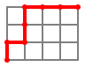
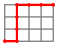
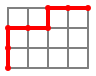
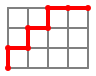
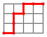
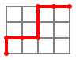
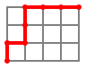
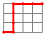
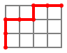
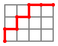
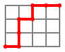
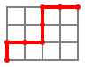
 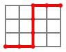
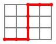
 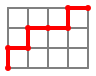
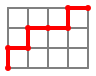


 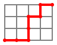
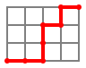


 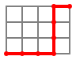
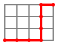
Ceux passant par \((4, 2)\), il y en a 15.
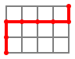
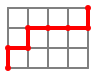
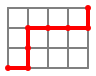
 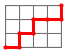
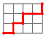
 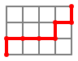
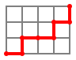
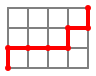
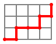

 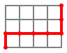
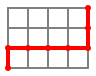
 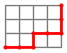
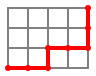
 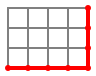
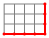
Écrire une fonction telle que nb_chemins(n, m) renvoie le nombre de chemins allant de \((0, 0)\) jusqu'à \((n, m)\).
Pour ce faire, on remarquera :
- Si
noumest nul,- alors le seul chemin est en ligne droite, la réponse est
1,
- alors le seul chemin est en ligne droite, la réponse est
- sinon :
netmsont non nuls et les chemins qui vont en(n, m)se répartissent en deux catégories :- ceux qui venaient de
(n - 1, m ), - ceux qui venaient de
(n , m - 1),
- ceux qui venaient de
- ces deux catégories sont distinctes et se comptent bien par récursivité.
- On utilisera un dictionnaire pour mémoriser les résultats intermédiaires.
- On complètera le code :
nb_chemins_mem = dict()
def nb_chemins(n, m):
if (n, m) not in nb_chemins_mem:
if (n == 0) or (...):
resultat = ...
else:
resultat = (
nb_chemins(..., ...)
+ ...
)
nb_chemins_mem[(n, m)] = ...
return ...
Exemples
>>> nb_chemins(3, 3)
20
>>> nb_chemins(4, 2)
15
>>> nb_chemins(4, 3)
35
Contraintes : Ici, \(0\leqslant n \leqslant 20\) et \(0\leqslant m \leqslant 20\).
nbpython-underscorecheminspython-underscoremem = dict()backslash-newlinebackslash-newlinedef nbpython-underscorechemins(n, m):backslash-newline if (n, m) not in nbpython-underscorecheminspython-underscoremem:backslash-newline if (n == 0) or (...):backslash-newline resultat = ...backslash-newline else:backslash-newline resultat = (backslash-newline nbpython-underscorechemins(..., ...)backslash-newline + ...backslash-newline )backslash-newline nbpython-underscorecheminspython-underscoremem[(n, m)] = ...backslash-newline return ...backslash-newlinebackslash-newlinebackslash-newline# testsbackslash-newlinebackslash-newlineassert nbpython-underscorechemins(3, 3) == 20backslash-newlineassert nbpython-underscorechemins(4, 2) == 15backslash-newlineassert nbpython-underscorechemins(4, 3) == 35backslash-newlinebackslash-newlinenbpython-underscorecheminspython-underscoremem = dict()backslash-newlinebackslash-newlinedef nbpython-underscorechemins(n, m):backslash-newline if (n, m) not in nbpython-underscorecheminspython-underscoremem:backslash-newline if (n == 0) or (m == 0):backslash-newline resultat = 1backslash-newline else:backslash-newline resultat = (backslash-newline nbpython-underscorechemins(n - 1, m )backslash-newline + nbpython-underscorechemins(n, m - 1)backslash-newline )backslash-newline nbpython-underscorecheminspython-underscoremem[(n, m)] = resultatbackslash-newline return nbpython-underscorecheminspython-underscoremem[(n, m)]backslash-newlinebackslash-newlinebackslash-newline# testsbackslash-newlinebackslash-newlineassert nbpython-underscorechemins(4, 3) == 35backslash-newlineassert nbpython-underscorechemins(3, 3) == 20backslash-newlinebackslash-newline
A
Commentaires⚓︎
Version du sujet⚓︎
{{ py('exo_corr') }}
Une adaptation directe des indications de l'énoncé.
Compléments⚓︎
Un chemin pour aller de \((0, 0)\) à \((4, 3)\) peut être décrit par une chaine de caractères composée de 4 'E' et 3 'N'.
Par exemple, "EENENNE" décrit
Il y a autant de chemins pour aller de \((0, 0)\) à \((4, 3)\) que de chaines de caractères composées de 4 'E' et 3 'N'.
Comment les compter ?
- Il y a \(4+3 = 7\) caractères.
- Il y a \(4\) choix possibles parmi les 7 places pour placer les
'E'. - Ensuite, les
'N'prennent les 3 places restantes, sans avoir le choix, de manière unique.
Le nombre de chemins pour aller de \((0, 0)\) à \((4, 3)\) est le nombre de façons de choisir 4 places parmi 7.
De manière générale, le nombre de chemins pour aller de \((0, 0)\) à \((n, m)\) est le nombre de façons de choisir \(n\) places parmi \(n+m\).
En cours de mathématiques, on peut voir que ce nombre est :
Où :
- \(n! = 1×2×3×\cdots×(n-1)×n\)
- \(m! = 1×2×3×\cdots×(m-1)×m\)
- \((n+m)! = 1×2×3×\cdots×(n+m-1)×(n+m)\)
Par exemple,
- \(4! = 1×2×3×4\)
- \(3! = 1×2×3\)
- \((4+3)! = 1×2×3×4×5×6×7\)
Z